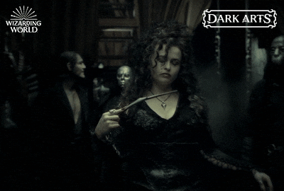

A cruel comensal da casa Black

Classe: Bruxa das Trevas
Bellatrix Lestrange é uma bruxa das trevas leal a Lord Voldemort, conhecida por sua crueldade e fanatismo. Ela é uma das mais perigosas seguidoras de Voldemort, participando de inúmeras missões para eliminar os inimigos do Lorde das Trevas. Bellatrix é caracterizada por sua personalidade instável e sádica, frequentemente exibindo um comportamento maníaco. Sua habilidade em magia negra e sua devoção inabalável a Voldemort a tornam uma adversária formidável para Harry Potter e seus aliados.